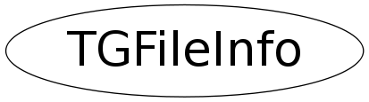

class TGFileInfo
TGFileDialog This class creates a file selection dialog. It contains a combo box to select the desired directory. A listview with the different files in the current directory and a combo box with which you can select a filter (on file extensions). When creating a file dialog one passes a pointer to a TGFileInfo object. In this object you can set the fFileTypes and fIniDir to specify the list of file types for the filter combo box and the initial directory. When the TGFileDialog ctor returns the selected file name can be found in the TGFileInfo::fFilename field and the selected directory in TGFileInfo::fIniDir. The fFilename and fIniDir are deleted by the TGFileInfo dtor.
Function Members (Methods)
public:
| TGFileInfo() | |
| ~TGFileInfo() | |
| void | SetMultipleSelection(Bool_t option) |
private:
| TGFileInfo(const TGFileInfo&) | |
| TGFileInfo& | operator=(const TGFileInfo&) |
Data Members
public:
| TList* | fFileNamesList | list of selected file names |
| Int_t | fFileTypeIdx | selected file type, index in fFileTypes |
| const char** | fFileTypes | file types used to filter selectable files |
| char* | fFilename | selected file name |
| char* | fIniDir | on input: initial directory, on output: new directory |
| Bool_t | fMultipleSelection | if true, allow multiple file selection |
| Bool_t | fOverwrite | if true overwrite the file with existing name on save |
Class Charts
{kind=link}
{kind=link}
{kind=link}
{kind=link}

Function documentation
TGFileInfo(const TGFileInfo& )
TGFileInfo& operator=(const TGFileInfo& )
void SetMultipleSelection(Bool_t option)